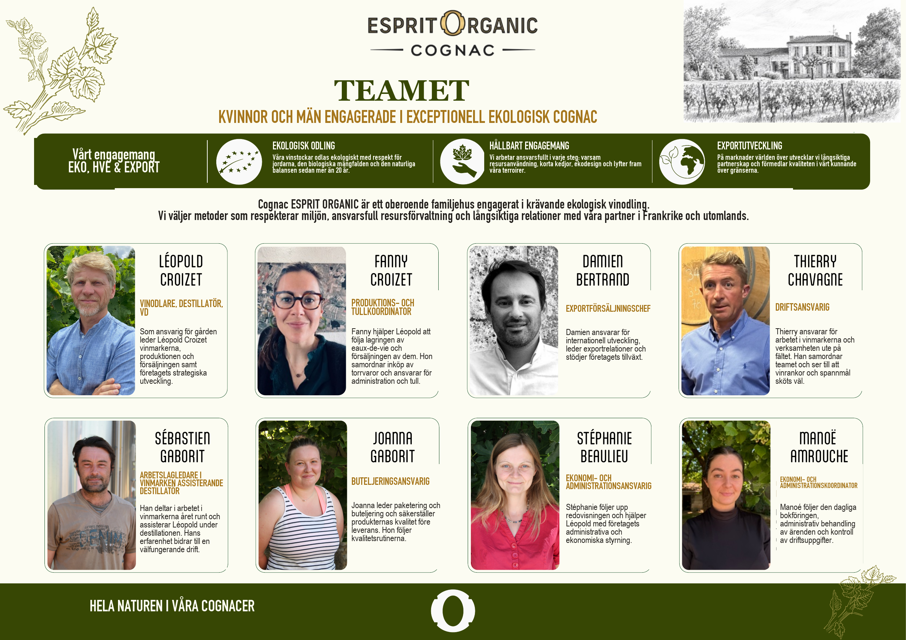

Teamet
Kvinnor och män engagerade i exceptionell ekologisk Cognac.
Cognac Esprit Organic är ett oberoende familjehus engagerat i krävande ekologisk vinodling.
- Léopold Croizet, vinodlare, destillatör och vd.
- Fanny Croizet, produktions- och tullkoordinator.
- Damien Bertrand, exportförsäljningschef.
- Thierry Chavagne, driftsansvarig.
- Sébastien Gaborit, arbetslagledare i vinmarken och assisterande destillatör.
- Joanna Gaborit, buteljeringsansvarig.
- Stéphanie Beaulieu, ekonomi- och administrationsansvarig.
- Manoé Amrouche, ekonomi- och administrationskoordinator.
